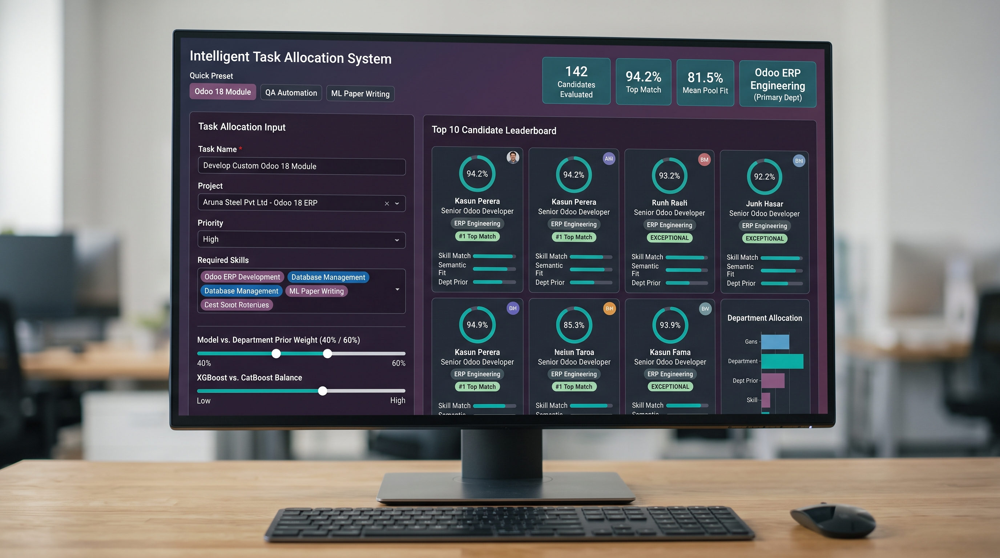

Intelligent Task Allocation System
An enterprise-grade Learning-to-Rank (LTR) machine learning system and production web application designed to automatically allocate incoming project tasks to the most suitable candidate resources based on technical skill taxonomy, historical performance context, dense semantic neural embeddings, and organizational domain priors.
Assigning incoming project tasks to the optimal resource is critical for maximizing task execution quality,
minimizing project delay, and maintaining balanced workload distribution. This system frames resource
selection as a Learning-to-Rank (LTR) problem, ranking candidate resources using a
score-averaging ensemble of XGBoostRanker and CatBoostRanker (YetiRank objective),
augmented with dense text embeddings from SentenceTransformer and domain affinity priors.
- 0.7676 NDCG@10 achieved by the Ensemble Ranker on held-out test tasks.
- 0.7283 MRR placing top-fit candidates consistently at rank 1 or 2.
- Dual-model ensemble combining Optuna-tuned XGBoost (60%) and CatBoost YetiRank (40%).
- 768-dimensional semantic embeddings via
all-mpnet-base-v2for cosine similarity. - Production Gradio web application styled with modern Odoo Enterprise UI and KPI smart buttons.

Executive Overview
In modern software organizations and IT service companies, assigning incoming project tasks to the optimal resource is critical for maximizing task execution quality, minimizing project delay, and maintaining balanced workload distribution. Traditional manual assignment relies heavily on manager intuition, which fails to scale across large candidate pools and complex skill requirements.
The Intelligent Task Allocation System frames resource selection as a
Learning-to-Rank (LTR) problem. Instead of predicting isolated binary match probabilities,
the system ranks candidate resources for a given query task using a score-averaging ensemble of
XGBoostRanker and CatBoostRanker (trained with the YetiRank objective),
augmented with dense text embeddings from SentenceTransformer and domain affinity priors.
- Top-10 Normalized Discounted Cumulative Gain (NDCG@10): 0.7676 achieved by the Ensemble Ranker on unseen test tasks.
- Mean Reciprocal Rank (MRR): 0.7283 on the test set, placing optimal candidates consistently at rank 1 or 2.
- Out-of-Vocabulary (OOV) Resilience: Automatic taxonomy expansion and catch-all
Skill_Otherfallback mechanism prevent out-of-distribution routing failures during live inference.
System Architecture
The following sequence details the full end-to-end data processing, feature extraction, ranking evaluation, and user presentation workflow.
How It Works
Section 1: Core Allocation Flow
When a project manager submits a task, the system executes a multi-stage evaluation pipeline to transform raw input text and deadlines into a ranked leaderboard of 10 recommended candidates:
- 1. Task Details Parsing: Captures task name, full description, project context, estimated planned hours, priorities, and deadlines.
- 2. Skill & Text Understanding: Maps task requirements against a predefined skill taxonomy using exact matching, keyword synonyms, or dense semantic embeddings (
all-mpnet-base-v2). - 3. Candidate Matching: Pulls profiles from the candidate pool and computes historical project involvement, skill match ratios, and past task volume.
- 4. Ensemble Scoring: Passes engineered feature matrices through tuned XGBoost and CatBoost ranking models to generate calibrated score distributions.
- 5. Prior Fusion: Blends model scores with historical department and job position affinity priors to ensure organizational domain alignment.
- 6. Top 10 Presentation: Sorts candidates, computes fit tiers (Exceptional, High, Strong, Good, Qualified), and renders Odoo-style visual cards and analytical breakdown charts.
Section 2: Manager Input Specifications
The manager provides the following parameters through the application interface:
| Field Name | Type | Description | Example Input |
|---|---|---|---|
| Task Name | Text | Concise title describing the task objective | Develop Custom Odoo 18 Module |
| Task Description | Text | Technical specifications, deliverables, and details | Implement ORM queries, PostgreSQL indexing, and custom views |
| Project Name | Dropdown | Associated client project context | Aruna Steel Pvt Ltd - Implementation Of Odoo 18 ERP |
| Required Skills | Multiselect | Specific technical domain skills needed | Odoo ERP Development, Database Management |
| Estimated Hours | Numeric | Planned duration required for completion | 24.0 |
| Task Priority | Dropdown | Urgency level of the task | High, Normal, Low |
| Planned Task Size | Dropdown | Scale of work required | Large, Medium, Small |
| Deadline Date | Date | Required date of completion | 2025-07-15 |
Section 3: Backend Execution Pipeline
The backend pipeline executes five distinct operations during inference:
-
1. Raw Text & Date Formatting:
Calculates text length metrics:
Task_Name_Length,Task_Description_Length,Task_Text_Length,Task_Word_Count,Has_Task_Description. Computes temporal features:Created_Year,Created_Month,Created_DayOfWeek,Created_Quarter,Days_To_Deadline,Has_Deadline. -
2. Logistics One-Hot Encoding:
Transforms
Estimated_Planned_Hoursto logarithmic scalePlanned_Hours_Log = log(1 + hours). Applies persistedOneHotEncoderobjects for categorical attributes (Task_Priority,Planned_Task_Size). -
3. Out-of-Vocabulary (OOV) Skill Mapping:
Resolves incoming skill tags against taxonomy columns.
Maps synonyms (e.g.,
Data AnalysistoSkill_Data_Science,AI/Deep LearningtoSkill_Machine_Learning). If an unrecognized or non-corporate skill is provided, it is automatically assigned toSkill_Otherto avoid zero-vector feature corruption. -
4. Dense Semantic Embedding Comparison:
Encodes task text and candidate historical text profiles into 768-dimensional dense vectors using
SentenceTransformer('sentence-transformers/all-mpnet-base-v2'). Calculatessemantic_text_similarityusing paired cosine similarity:$$\text{Similarity}(T, C) = 1 - \text{CosineDistance}(V_{\text{task}}, V_{\text{candidate}})$$ - 5. Group-Relative Feature Engineering: Calculates standard scores (Z-scores) and mean differences for top candidate features within the current task candidate group to capture relative dominance among competitors.
Section 4: Expanded Skill Taxonomy
The system defines an expanded multi-domain skill taxonomy divided into Corporate Odoo, Academic & Data Science, and Miscellaneous catch-all categories:
- Odoo ERP Development: Odoo ERP, Odoo addons, Odoo modules, Python Odoo framework, ORM.
- Database Management: SQL queries, PostgreSQL, MySQL, database backup, schema migration, indexing.
- Server Administration: Linux server, VPS, SSL certificates, Nginx, Apache, Docker, deployment scripts.
- Project Management: Sprint planning, scrum master, project coordination, stakeholder meetings, status reports.
- Software Testing: Test cases, QA, UAT, Selenium, pytest, automated testing, bug reporting, debugging.
- Web Development: Frontend React/Angular/Vue, backend API REST, JavaScript, TypeScript, Python, Flask, Django.
- Client & Functional Support: Client support tickets, functional support, customer issue troubleshooting, live chat.
- Documentation: Technical documentation writing, blueprint, specification, user manual, API docs.
- Training & Mentorship: Intern training, onboarding, mentorship sessions, knowledge transfer.
- Business Intelligence & Data Visualization: Tableau dashboards, Power BI reports, chart visualization, KPI metrics.
- Data Engineering & Warehousing: ETL pipelines, data warehousing, Snowflake, dimensional modeling, dbt, Airflow.
- Research: Academic research, literature review, scientific investigation, methodology, study design.
- Academic Writing: Research paper writing, scientific publishing, manuscript drafting, thesis, citations, peer review.
- Data Science: Exploratory data analysis, statistical analysis, predictive modeling, pandas, numpy, scipy, data mining.
- Machine Learning: Supervised/unsupervised learning, scikit-learn, model training, feature selection, evaluation metrics.
- NLP: Natural language processing, text classification, transformers, sentiment analysis, NER, tokenization.
- Other (
Skill_Other): Miscellaneous tasks, general administration, ad-hoc activities, unclassified or OOV skills.
Section 5: Ensemble Model & Prior Fusion
The final ranking score combines predictions from two Optuna-tuned gradient boosted decision tree rankers and organizational domain priors:
1. MinMax Score Normalization
Raw scores $S_{\text{xgb}}$ and $S_{\text{cat}}$ are scaled per task group:
2. Score-Averaging Combination
3. Prior Fusion
Feature Engineering & Technical Representation
Feature Engineering Pipeline
The system constructs a 72-dimensional feature matrix for every candidate pair $(T_i, C_j)$:
-
Candidate-Task Skill Matches:
employee_task_skill_match_count: Total count of required skills possessed by the candidate.employee_task_skill_match_ratio: $\frac{\text{match\_count}}{\max(\text{task\_skill\_count}, 1)}$.employee_task_skill_strength: Weighted sum of skill proficiency profiles.employee_has_matching_skill: Binary indicator (1 if match count > 0, else 0).
-
Dense Semantic Text Similarity:
semantic_text_similarity: Cosine similarity between task description embeddings and historical task text written by the candidate.
-
Historical Experience & Domain Priors:
employee_project_task_count: Number of tasks completed by candidate in the specific target project.employee_has_project_experience: Binary flag for project familiarity.Task_Employee_Skill_Match: Interaction metric blending historical candidate skill frequency and department-level skill affinity.dept_skill_prior: Domain prior blending department affinity and job title alignments.
Group-Relative Z-Scores
To enable ranking models to compare candidates within the context of a single task request, group-relative transformation is applied to top features:
Applied features include employee_task_skill_match_ratio, employee_task_skill_strength,
employee_project_task_count, employee_historical_task_count,
Task_Employee_Skill_Match, and semantic_text_similarity.
Model Training, Evaluation & Benchmarks
Master Performance Leaderboard
All models were evaluated across validation and held-out test splits using standard Learning-to-Rank metrics:
- NDCG@K (Normalized Discounted Cumulative Gain at K=5, 10): Measures ranking quality penalizing relevant items placed lower in the list.
- MRR (Mean Reciprocal Rank): Evaluates reciprocal rank of the first relevant candidate.
| Ranking Model | Model Paradigm | Val NDCG@5 | Val NDCG@10 | Val MRR | Test NDCG@5 | Test NDCG@10 | Test MRR |
|---|---|---|---|---|---|---|---|
| Ensemble (XGBoost 60% + CatBoost 40%) | Score-Averaging LTR | 0.7812 | 0.7895 | 0.7592 | 0.7587 | 0.7676 | 0.7283 |
| XGBoostRanker (Optuna Tuned) | Pairwise LTR | 0.7780 | 0.7840 | 0.7510 | 0.7558 | 0.7630 | 0.7217 |
| CatBoostRanker (Optuna Tuned) | YetiRank LTR | 0.7822 | 0.7899 | 0.7564 | 0.7477 | 0.7571 | 0.7148 |
| XGBoostRanker (Baseline) | Pairwise LTR | 0.7420 | 0.7531 | 0.7342 | 0.6170 | 0.6301 | 0.6029 |
| CatBoostRanker (Baseline) | YetiRank LTR | 0.7513 | 0.7591 | 0.7396 | 0.6099 | 0.6200 | 0.5848 |
| Random Forest | Pointwise Classification | 0.5866 | 0.6271 | 0.5893 | 0.4603 | 0.4967 | 0.4446 |
| Logistic Regression | Linear Baseline | 0.4728 | 0.5227 | 0.4708 | 0.3280 | 0.3810 | 0.3211 |
| LightGBMRanker | LambdaMART Baseline | 0.4640 | 0.5141 | 0.4631 | 0.3344 | 0.3825 | 0.3193 |
| Heuristic Rule Baseline | Rule-Based | 0.2211 | 0.2752 | 0.2467 | 0.1720 | 0.2332 | 0.2096 |
| Random Baseline | Random Chance | 0.0683 | 0.1154 | 0.1135 | 0.0654 | 0.1107 | 0.1078 |
Moving from pointwise classification (Random Forest) to pairwise/listwise Learning-to-Rank (XGBoost/CatBoost) yielded a +54.5% relative increase in Test NDCG@10 (from 0.4967 to 0.7676).
Hyperparameter Optimization
Hyperparameter tuning was conducted using Optuna over 50 trials for both primary rankers:
XGBoostRanker (Optuna Best Parameters)
grow_policy:lossguidemax_leaves:157n_estimators:400learning_rate:0.1136max_depth:6min_child_weight:2subsample:0.8241colsample_bytree:0.6789reg_alpha:0.7958reg_lambda:0.3784
CatBoostRanker (Optuna Best Parameters)
iterations:600learning_rate:0.0777depth:10l2_leaf_reg:1.6542random_strength:1.9720loss_function:YetiRank
Performance Visualization Diagrams
Below are the empirical evaluation diagrams comparing model paradigms, Optuna tuning histories, and ensemble performance displayed in high-resolution format:
Complete Model Leaderboard & Ensemble Comparison
Ensemble vs All Models
Comprehensive evaluation comparing test NDCG@5, NDCG@10, and MRR metrics across all models, proving the superiority of the 60% XGBoost + 40% CatBoost score-averaging ensemble over standalone rankers and baselines.
Baseline Model Comparison Before Tuning
Pre-Tuning Benchmark
Initial baseline performance across all paradigms prior to hyperparameter optimization, showing raw LTR rankers already substantially surpassing classification approaches.
Baseline NDCG Curve Comparison
Ranking Curves
NDCG curves across cutoffs K=1 through K=10, highlighting sustained ranking quality across top candidate ranks.
Ensemble Model Showdown
Ensemble Analysis
Direct comparison showing the complementary strengths of XGBoostRanker and CatBoostRanker (YetiRank) combined via score-averaging.
Optuna Tuned CatBoost Ranker
CatBoost YetiRank
Convergence and validation metric progression across 50 Optuna optimization trials for CatBoostRanker.
Optuna Tuned XGBoost Ranker
XGBoost Pairwise
Parameter optimization progression and lossguide tree growth tuning across 50 Optuna trials for XGBoostRanker.
Optuna Tuned NDCG@10 Metric Progression
Metric Trajectory
Evolution of NDCG@10 validation score throughout the Optuna study, showing steady convergence towards the global optimum.
Optuna vs Grid Search Comparison
Optimization Efficiency
Empirical efficiency comparison demonstrating Optuna Bayesian optimization finding higher NDCG configurations in a fraction of the compute iterations required by brute-force Grid Search.
Web Application & UI Architecture
The system features a production-ready Gradio interface (app.py) designed with custom HTML/CSS
imitating the modern Odoo Enterprise UI:
Key Interface Features
- Quick Input Templates: One-click pre-population for common enterprise task scenarios (
Odoo Module Development,QA & Automated Testing,Academic ML Paper Writing,Database Maintenance). - Odoo-Style KPI Smart Buttons: Real-time summary displaying total candidates evaluated, best match score percentage, average candidate match score, and leading department.
- Kanban Record Cards: Color-coded candidate cards with initials avatar, rank badges (#1 Top Match, #2 Runner Up, #3 Top Candidate), fit tier ribbons, score ring indicators, and job role details.
- Department Allocation Progress Chart: Visual breakdown of recommended candidate distribution across organizational departments.
- ZeroGPU Compatibility: Includes startup dummy warmup hooks for seamless execution on HuggingFace Spaces / ZeroGPU environments.